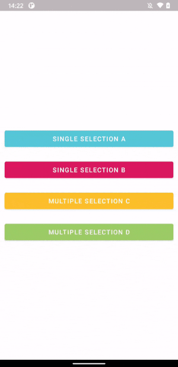
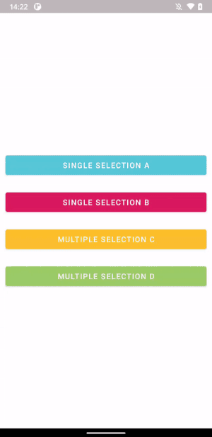
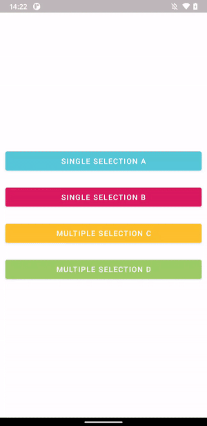

RecyclerPickerDialog¶

A FragmentDialog implemented with RecyclerView that can accept Single or Multiple selections
Installation¶
RecyclerPickerDialog is distributed through Maven Central and Jitpack.
implementation 'com.github.guilhe:recycler-picker-dialog:${LATEST_VERSION}'

Usage¶
Selection types¶
enum class SelectionType { SINGLE, MULTIPLE }
Selector types¶
enum class SelectorType { CHECK_BOX, RADIO_BUTTON, SWITCH }
Custom fields (and default values)¶
var title = ""
var showSearchBar = false
var inputHint = ""
var buttonText: String = "Ok"
var resetValuesOnShow = true
var dismissKeyboardOnSelection = true
var dismissOnSelection = false
var isChoiceMandatory = false
var data: ArrayList<Item> = arrayListOf()
@AnimRes var itemsLayoutAnimator: Int? = null
var dialogHeight: Int = ViewGroup.LayoutParams.MATCH_PARENT
var lifecycleOwner: LifecycleOwner? = null
Avoid Memory Leaks¶
Just add the following line to avoid memory leak if not dismissed before activity or fragment are destroyed:
picker.newInstance(/* setup... */).apply { lifecycleOwner = this@MainActivity }
Themes¶
   
To override default theme just create yours by simply extending it and replacing desired color values:
<style name="DialogA" parent="RecyclerPickerDialogTheme">
<item name="colorPrimary">@color/red</item>
<item name="recyclerPickerDialogCornerRadius">20dp</item>
</style>
Attributes¶
You can override the following attributes:
<resources>
<style name="RecyclerPickerDialogTheme" parent="Theme.MaterialComponents.Light.Dialog">
<item name="colorPrimary"/>
<item name="colorOnPrimary"/>
<item name="colorSecondary"/>
<item name="android:textColorPrimary"/>
<item name="android:textColorSecondary"/>
<item name="colorAccent"/>
<item name="android:colorEdgeEffect"/>
<item name="recyclerPickerDialogCornerRadius"/>
</style>
</resources>
- colorPrimary > Title and Button background color
- colorOnPrimary > Title and Button text color
- colorSecondary > Dialog and Row background color
- colorEdgeEffect > RecyclerView edge color
- textColorPrimary > Search and Row text color
- textColorSecondary > Search hint and icon color; Horizontal Lines color
- colorSurface > CheckBox, RadioButton and Switch unchecked color
- colorOnSurface > Button background when disabled (note overrides colorSurface)
- colorAccent > CheckBox, RadioButton and Switch checked color; Hint cursor color
- recyclerPickerDialogCornerRadius > Dialog corners radius
Creating new instance:¶
val picker =
RecyclerPickerDialogFragment
.newInstance(
type = SelectionType.SINGLE, //default
selector = SelectorType.CHECK_BOX, //default
theme = R.style.RecyclerPickerDialogTheme, //default
onItemsPicked = { selected -> /* selected items or empty */ }
)
.apply {
/* configure custom fields */
}
Show it when desired:
picker.show(supportFragmentManager, "MyPickerDialogFragment")
Try out the sample app to see it working!
Dependencies¶
- androidx.appcompat:appcompat
- androidx.recyclerview:recyclerview
- androidx.constraintlayout:constraintlayout
- com.google.android.material:material
Bugs and Feedback¶
For bugs, questions and discussions please use the Github Issues.
LICENSE¶
Copyright © 2020-present GuilhE
Licensed under the Apache License, Version 2.0 (the “License”); you may not use this file except in compliance with the License. You may obtain a copy of the License at
http://www.apache.org/licenses/LICENSE-2.0
Unless required by applicable law or agreed to in writing, software distributed under the License is distributed on an “AS IS” BASIS, WITHOUT WARRANTIES OR CONDITIONS OF ANY KIND, either express or implied. See the License for the specific language governing permissions and limitations under the License.